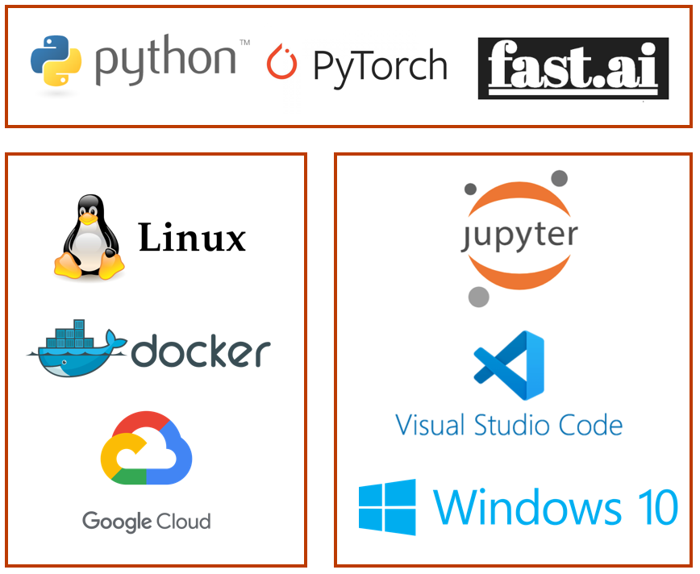

gcloud beta compute instances create gpu `
--zone=us-central1-c `
--machine-type=n1-standard-8 `
--subnet=default `
--service-account=YOURSERVICEACCOUNT-compute@developer.gserviceaccount.com `
--image-family=common-cu110 `
--image-project=deeplearning-platform-release `
--boot-disk-size=50GB `
--scopes=https://www.googleapis.com/auth/cloud-platform,https://www.googleapis.com/auth/devstorage.full_control `
--accelerator=type=nvidia-tesla-k80,count=1 `
--metadata=install-nvidia-driver=True `
--maintenance-policy=TERMINATE `
--metadata-from-file startup-script=startup-gpu.sh `
--preemptibleI’ve spend some time tinkering with getting a preferred data science stack up. In this post I’m detailing the choices made and could also help you get started on GCP. If you just want to start with programming, go to Google Colab and you’re set to go.

The data science setup is now made up of:
- All development in Python (installed via Miniconda), with Pytorch and Fast.ai for deep learning
- A personal computer with Windows 10, VSCode with Jupyter notebooks functionality
- Google Cloud Platform with a Docker container running Linux Ubuntu
- Github for storing the codebase and a github action based blog running fastpages
For me this works best at the moment. Some remarks on tradeoffs.
Python vs other languages. Python is todays language of choice for data science. It’s just so simple to express ideas in code. Also there are just so many packages available with useful functionality that the whole world is basically an import statement away. Maybe I’ll learn Julia, Kotlin or Swift once, but for now I’m set.
Pytorch vs TensorFlow: Pytorch is so much easier compared to Tensorflow. I remember doing an introduction on Tensorflow and I found it difficult to grasp.
Pytorch vs Fast.ai. Fast.ai is kind of the Keras of Pytorch. It has been a blessing and I do highly recommend it. The online course is great. Also you can get a deeplearning model running in no time. But it’s also an extra layer of abstraction to remember on top of trying to learn Pytorch. So right now I’m now mostly using with Pytorch and Fast.ai once in a while.
Windows vs Linux: OK for data science everyone says Linux is the go to, but I’m just so accustomed to Windows! I can definitely see the advantages of Linux and are slowly gravitating towards using a command line interface more. Windows made a big step with WSL2, so you can now run Linux from within Windows easily, so I did install Ubuntu locally. Maybe in the future I’ll switch fully to Linux, but for now this is working fine.
VSCode vs Jupyter Notebooks. In my opinion the setup of running notebooks within VSCode combines the advantages of a fully fledged IDE with the agile development that notebooks are known for.
Having an own computer vs doing everything in the cloud. Working in the cloud always has a startup of a couple of minutes. My time is limited, so I do prefer to open VSCode and start coding right away. When I need more compute I use the cloud.
GCP vs other cloud platforms. This decision was taken based on the $300 free credit you get with GCP.
Github: Initially I had all the code on my local computer and I used Git for version control. Now that I sometimes iterate between working locally and in the cloud, I store the main branch on Github and push/pull from whichever environment I’m working on.
Fastpages: First I started on Medium, but fastpages is a live saver for publishing from notebooks. It makes it actually fun to blog, instead of a chore duplicating your work in a blog article
Docker: For reproducibility, Docker is king. For cloud computing I think it’s the best way. You just make a Dockerfile and know what you will get. Also it can make the steps to deployment easier.
App deployment: Don’t know what the best is yet. Have tried Render, and could get a webserver it to work with GCP as well. You can even deploy on Binder with a notebook. Guess this one depends on the use case.
The remainer of the post is dedicated to helping you out with setting up GCP with Docker. Some things you need:
- The CLI command from Windows to get a VM running
- A startup script to make sure the VM runs the container
- A Dockerfile to build a docker image from
Let’s start with the CLI command
You can create a GCP VM from the command line interface (CLI) or through the browser based console. Play around with the console to get an idea. Then, on the bottom click gcloud command to see the CLI command to copy in your terminal
This command uses ` at end of line since it’s run from Windows Powershell. If you use Linux, use backslash
Don’t use Container Optimizer OS, as of november 2020 they dont install nvidia container runtime, meaning it’s difficult to make use of the GPU inside the container. An approach that works is to use a data science image like common-cu110 as I’ve used here.
The K80 is the cheapest GPU, good for experimenting.
Also, use –preemtible. You’re VM may be stopped unexpectedly, but it’s about 66% cheaper!
Next up is the startup script…
#!/bin/bash
# first some waiting until gpu drivers are truly installed
while ! [[ -x "$(command -v nvidia-smi)" ]];
do
echo "sleep to check"
sleep 5s
done
echo "nvidia-smi is installed"
while [[ $(command nvidia-smi| cut -c1-10) == "NVIDIA-SMI"* ]];
do
echo "$(command nvidia-smi)"
echo "sleeping to check"
sleep 5s
done
echo "$(command nvidia-smi)"
echo "nvidia-smi drivers are up"
# if you have a persistent disk you can use this to automatically mount it, otherwise remove it
if [ ! -d "/mnt/disks/storage" ]
then
sudo mkdir -p /mnt/disks/storage
sudo mount -o discard,defaults /dev/sdb /mnt/disks/storage
sudo chmod a+w /mnt/disks/storage
sudo cp /etc/fstab /etc/fstab.backup
sudo blkid /dev/sdb
echo UUID=`sudo blkid -s UUID -o value /dev/sdb` /mnt/disks/storage ext4 discard,defaults,nofail 0 2 | sudo tee -a /etc/fstab
echo "mounting complete "
else
echo "not first startup"
fi
# startup your Docker container, with port 6006 mapped to Docker for Tensorboard
gcloud auth configure-docker
docker run -d -p 0.0.0.0:6006:6006 --gpus all --ipc="host" -v /mnt/disks/storage:/ds gcr.io/delta-deck-285906/dockerfile
echo 'Docker run with GPUs'The first part of the startup script is mainly to wait until the gpu drivers are properly installed. Otherwise, docker run –gpus all will throw an error. Additionally, I like to use a persistent disk. To avoid the hassle of having to mount it every time I startup a new VM, this script does the work for you. Finally the most important is the Docker run instruction. It opens your container with GPU support. The first time you start up your VM it will take some minutes, but afterwards it’s almost immediate.
After this I like to connect to the running container with Vscode Remote-Container Attach to running container command. Checkout the Vscode docs for how to set this up. Basically you need to put the external ip of the VM into your SSH config file and add a line to your settings.json
# settings.json
"docker.host": "ssh://YOURUSER@xxx.xxx.xxx.xxx",Host xxx.xxx.xxx.xxx
HostName xxx.xxx.xxx.xxx.xxx
IdentityFile localpath/to/publicsshkey
User YOURUSER
StrictHostKeyChecking noOne final file to share: the Dockerfile which you can use to build your Docker image
FROM nvidia/cuda:10.2-runtime-ubuntu18.04
##Set environment variables
ENV LANG=C.UTF-8 LC_ALL=C.UTF-8
RUN apt-get update --fix-missing && apt-get install -y wget byobu\
curl \
git-core \
python3-virtualenv \
unzip \
&& \
apt-get clean && \
rm -rf /var/lib/apt/lists/*
RUN wget --quiet https://repo.anaconda.com/miniconda/Miniconda3-py38_4.8.3-Linux-x86_64.sh -O ~/miniconda.sh && \
/bin/bash ~/miniconda.sh -b -p /opt/conda && \
rm ~/miniconda.sh && \
ln -s /opt/conda/etc/profile.d/conda.sh /etc/profile.d/conda.sh && \
echo ". /opt/conda/etc/profile.d/conda.sh" >> ~/.bashrc && \
echo "conda activate base" >> ~/.bashrc
ENV PATH /opt/conda/bin:$PATH
RUN pip --no-cache-dir install --upgrade \
altair \
ipykernel \
kaggle \
fastbook \
tensorboard \
diskcache \
&& \
conda install -c fastai -c pytorch fastai && \
pip uninstall -y pillow && \
pip install pillow-simd --upgrade && \
mkdir -p ds/.kaggle && \
git clone https://github.com/fastai/fastbook.git /ds/fastbook
# Open Ports for Jupyter
# EXPOSE 7745
#Setup File System
ENV HOME=/ds
ENV SHELL=/bin/bash
ENV KAGGLE_CONFIG_DIR=/ds/.kaggle
VOLUME /ds
WORKDIR /ds
# Make sure the container stays open
CMD tail -f /dev/nullThe Docker tutorial by Hamel Husain has helped me greatly, especially the advice to use someone elses dockerfile and start making it your own by gradually adapting. The above dockerfile is based upon his actually.
That’s it, hope it has helped you!